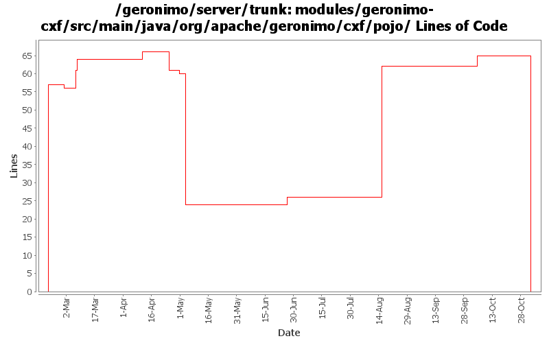

[root]/modules/geronimo-cxf/src/main/java/org/apache/geronimo/cxf/pojo

| Author | Changes | Lines of Code | Lines per Change |
|---|---|---|---|
| Totals | 23 (100.0%) | 164 (100.0%) | 7.1 |
| gawor | 12 (52.2%) | 92 (56.1%) | 7.6 |
| dims | 4 (17.4%) | 57 (34.8%) | 14.2 |
| jgenender | 2 (8.7%) | 14 (8.5%) | 7.0 |
| akulshreshtha | 1 (4.3%) | 1 (0.6%) | 1.0 |
| prasad | 4 (17.4%) | 0 (0.0%) | 0.0 |
GERONIMO-3565. Modules distributed amongst framework/modules and plugins
0 lines of code changed in 4 files:
GERONIMO-2879 Change few more references to TM (j2eeType=JTAResource)
1 lines of code changed in 1 file:
got ridd of initContextRoot() method that wasn't thread safe (GERONIMO-3495)
5 lines of code changed in 1 file:
use the annotation Holder object for injections for POJO web services
57 lines of code changed in 3 files:
use SecurityContext class in CXF (simplifies our code)
3 lines of code changed in 2 files:
much improved jaxws ejb web service support
5 lines of code changed in 1 file:
unused import
0 lines of code changed in 1 file:
install ejb invoker
0 lines of code changed in 1 file:
Updated code due to CXF new SNAPS
3 lines of code changed in 1 file:
basic saaj 1.3 integration
3 lines of code changed in 1 file:
property resolve wsdlLocation attribute of WebService annotation
7 lines of code changed in 1 file:
enable oasis catalog resolution for wsdl and xsd for cxf
12 lines of code changed in 1 file:
GERONIMO-2882 patch committed
11 lines of code changed in 1 file:
GERONIMO-2849 - service-ref app client test
GERONIMO-2850 - CXF: initial web service support for EJBs
57 lines of code changed in 4 files: